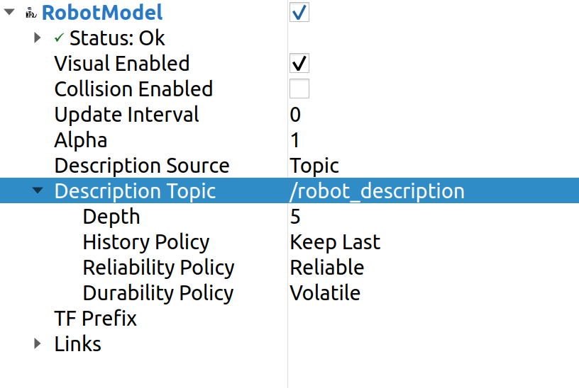
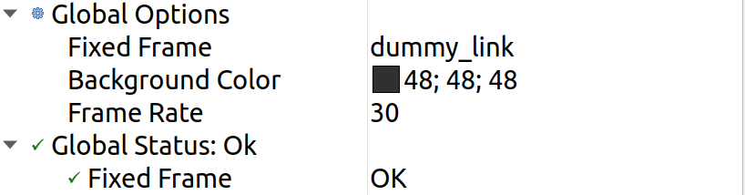

RVIZ
Visualization is a very important concept in robot simulation. In order to visualize the various sensor inputs like LIDAR, Camera etc. we will be using RVIZ 2 a software for visualizing the ROS2 topics.
RVIZ 2 requires setup and configurations that might be overwhelming at this stage so to help out we will be using a few templates.
We move to the root of our package and then run the code below to download the templates.
cd ~/test_ws/src/package-name/
# Example
cd ~/test_ws/src/test_package/
svn export https://github.com/shantanuparabumd/ENPM-662-Introduction-to-Robot-Modelling.git/trunk/templates/rviz
svn export https://github.com/shantanuparabumd/ENPM-662-Introduction-to-Robot-Modelling.git/trunk/templates/template2/launch
So that the robot can move in the RVIZ environment we add a dummy_link to our robot. This is simply done by adding a link and a joint to robot_name.urdf.xacro file as follows.
# Add this before base link
<link name="dummy_link"></link>
# Add this after base link
<joint name="dummy_joint" type="fixed">
<origin rpy="0 0 0" xyz="0 0 0" />
<parent link="dummy_link"/>
<child link="base_link"/>
</joint>
File Description:
The gazebo.launch.py will launch the Gazebo environment and will load the controllers.
The display.launch.py will launch RVIZ 2 along with the neccessary setup for the Robot Visualization.
The debug.launch.py will launch both Gazebo and RVIZ 2 together.
Use any of the above launch files as required.
Once RVIZ is launched Add the robot model to the tree.
If the robot is not visible add the topic /robot_description to the Description Topic argument.
{kind=link}
Select dummy_link in the Fixed Frame argument.
{kind=link}